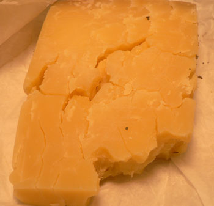

Storing cheese
What is the best way to store cheese? In the past, I kept it in the fridge in a sandwich bag. Then I read that you should wrap it in wax paper or parchment paper, letting air flow in, and put it in the bottom drawer. I did that with the Keen’s cheddar I bought at Murray’s, and look at it after eight days:

It’s dry, chewy, and not fit to be sliced and savored. I can still use it in a melted preparation, but this is disappointing to say the least, especially considering the price of Keen’s! Is it somehow wrong to do what I was doing already?
Comments
You could try wrapping it in parchment paper, then putting that in a plastic bag. Personally, I still wrap cheese in plastic, but eventually it does get moldy. You can always cut mold off, though, and usually the cheese is still edible, whereas what you have there is all dried out and, like you say, mostly a waste. Some people advocate wrapping in foil, but that always seems to tear when unwrapping.
i agree with your mother, i wrap mine in parchment then in a ziplock. or if i’m feeling fancy, in parchment tightly, then tie it in string. the key is to use parchment to let it breathe but not have it open to soak up bad things in your refrigerator. i also keep it in the ‘dairy’ drawer. did you try putting it in a drawer or your butter keeper?
Previously, I put it in plastic wrap in the bottom drawer. This time, I kept in its Murray’s Cheese wrapping (two layers of paper), also in the drawer, and it ended up cracked and dry after one week. I’m definitely returning to the airtight method.
It makes me sad when people take cheese home and end up throwing it out. The main problem was that you waited too long to eat the cheese. Even if you parchment paper/sandwich bag/tupperware (all the right things to do) you should really try to consume a cut piece of cheese in 3-4 days. That means only buying what you think you can finish, quickly. The biggest problem with the fridge is lack of humidity – butter or dairy drawers help but still can’t save the cheese after 3-4 days.
Add a comment